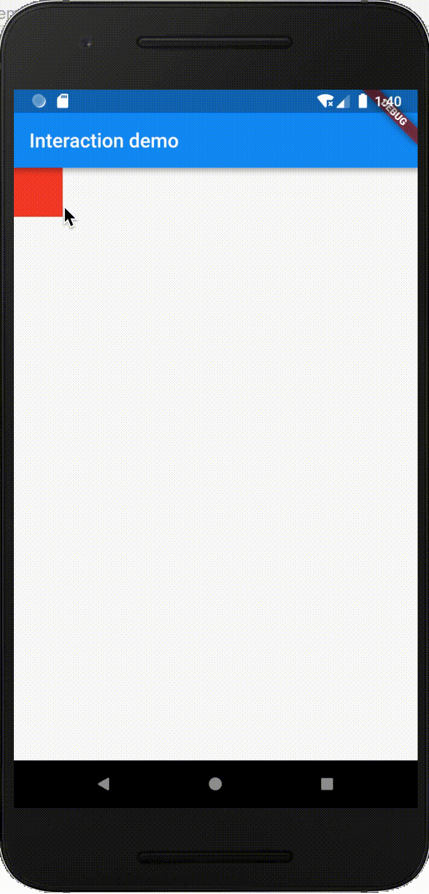
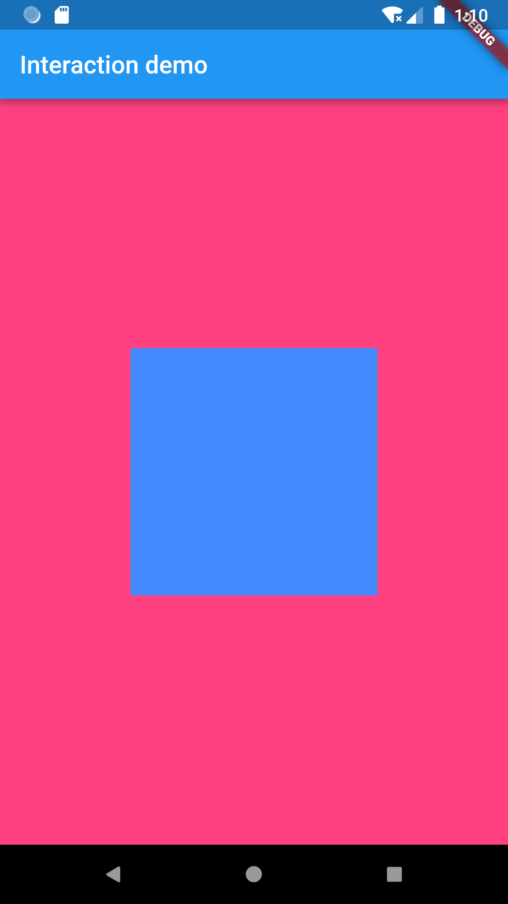

你好，我是陈航。今天，我和你分享的主题是，如何响应用户交互事件。
在前面两篇文章中，我和你一起学习了 Flutter 依赖的包管理机制。在 Flutter 中，包是包含了外部依赖的功能抽象。对于资源和工程代码依赖，我们采用包配置文件 pubspec.yaml 进行统一管理。
通过前面几个章节的学习，我们已经掌握了如何在 Flutter 中通过内部实现和外部依赖去实现自定义 UI，完善业务逻辑。但除了按钮和 ListView 这些动态的组件之外，我们还无法响应用户交互行为。那今天的分享中，我就着重与你讲述 Flutter 是如何监听和响应用户的手势操作的。
手势操作在 Flutter 中分为两类：
- 第一类是原始的指针事件（Pointer Event），即原生开发中常见的触摸事件，表示屏幕上触摸（或鼠标、手写笔）行为触发的位移行为；
- 第二类则是手势识别（Gesture Detector），表示多个原始指针事件的组合操作，如点击、双击、长按等，是指针事件的语义化封装。
接下来，我们先看一下原始的指针事件。
指针事件
指针事件表示用户交互的原始触摸数据，如手指接触屏幕 PointerDownEvent、手指在屏幕上移动 PointerMoveEvent、手指抬起 PointerUpEvent，以及触摸取消 PointerCancelEvent，这与原生系统的底层触摸事件抽象是一致的。
在手指接触屏幕，触摸事件发起时，Flutter 会确定手指与屏幕发生接触的位置上究竟有哪些组件，并将触摸事件交给最内层的组件去响应。与浏览器中的事件冒泡机制类似，事件会从这个最内层的组件开始，沿着组件树向根节点向上冒泡分发。
不过 Flutter 无法像浏览器冒泡那样取消或者停止事件进一步分发，我们只能通过 hitTestBehavior 去调整组件在命中测试期内应该如何表现，比如把触摸事件交给子组件，或者交给其视图层级之下的组件去响应。
关于组件层面的原始指针事件的监听，Flutter 提供了 Listener Widget，可以监听其子 Widget 的原始指针事件。
现在，我们一起看一个 Listener 的案例。我定义了一个宽度为 300 的红色正方形 Container，利用 Listener 监听其内部 Down、Move 及 Up 事件：
Listener( child: Container( color: Colors.red,// 背景色红色 width: 300, height: 300, ), onPointerDown: (event) => print("down $event"),// 手势按下回调 onPointerMove: (event) => print("move $event"),// 手势移动回调 onPointerUp: (event) => print("up $event"),// 手势抬起回调);我们试着在红色正方形区域内进行触摸点击、移动、抬起，可以看到 Listener 监听到了一系列原始指针事件，并打印出了这些事件的位置信息：
I/flutter (13829): up PointerUpEvent(Offset(97.7, 287.7))I/flutter (13829): down PointerDownEvent(Offset(150.8, 313.4))I/flutter (13829): move PointerMoveEvent(Offset(152.0, 313.4))I/flutter (13829): move PointerMoveEvent(Offset(154.6, 313.4))I/flutter (13829): up PointerUpEvent(Offset(157.1, 312.3))手势识别
使用 Listener 可以直接监听指针事件。不过指针事件毕竟太原始了，如果我们想要获取更多的触摸事件细节，比如判断用户是否正在拖拽控件，直接使用指针事件的话就会非常复杂。
通常情况下，响应用户交互行为的话，我们会使用封装了手势语义操作的 Gesture，如点击 onTap、双击 onDoubleTap、长按 onLongPress、拖拽 onPanUpdate、缩放 onScaleUpdate 等。另外，Gesture 可以支持同时分发多个手势交互行为，意味着我们可以通过 Gesture 同时监听多个事件。
Gesture 是手势语义的抽象，而如果我们想从组件层监听手势，则需要使用 GestureDetector。GestureDetector 是一个处理各种高级用户触摸行为的 Widget，与 Listener 一样，也是一个功能性组件。
接下来，我们通过一个案例来看看 GestureDetector 的用法。
我定义了一个 Stack 层叠布局，使用 Positioned 组件将 1 个红色的 Container 放置在左上角，并同时监听点击、双击、长按和拖拽事件。在拖拽事件的回调方法中，我们更新了 Container 的位置：
// 红色 container 坐标double _top = 0.0;double _left = 0.0;Stack(// 使用 Stack 组件去叠加视图，便于直接控制视图坐标 children: <Widget>[ Positioned( top: _top, left: _left, child: GestureDetector(// 手势识别 child: Container(color: Colors.red,width: 50,height: 50),// 红色子视图 onTap: ()=>print("Tap"),// 点击回调 onDoubleTap: ()=>print("Double Tap"),// 双击回调 onLongPress: ()=>print("Long Press"),// 长按回调 onPanUpdate: (e) {// 拖动回调 setState(() { // 更新位置 _left += e.delta.dx; _top += e.delta.dy; }); }, ), ) ],);运行这段代码，并查看控制台输出，可以看到，红色的 Container 除了可以响应我们的拖拽行为外，还能够同时响应点击、双击、长按这些事件。

尽管在上面的例子中，我们对一个 Widget 同时监听了多个手势事件，但最终只会有一个手势能够得到本次事件的处理权。对于多个手势的识别，Flutter 引入了手势竞技场（Arena）的概念，用来识别究竟哪个手势可以响应用户事件。手势竞技场会考虑用户触摸屏幕的时长、位移以及拖动方向，来确定最终手势。
那手势竞技场具体是怎么实现的呢？
实际上，GestureDetector 内部对每一个手势都建立了一个工厂类（Gesture Factory）。而工厂类的内部会使用手势识别类（GestureRecognizer），来确定当前处理的手势。
而所有手势的工厂类都会被交给 RawGestureDetector 类，以完成监测手势的大量工作：使用 Listener 监听原始指针事件，并在状态改变时把信息同步给所有的手势识别器，然后这些手势会在竞技场决定最后由谁来响应用户事件。
有些时候我们可能会在应用中给多个视图注册同类型的手势监听器，比如微博的信息流列表中的微博，点击不同区域会有不同的响应：点击头像会进入用户个人主页，点击图片会进入查看大图页面，点击其他部分会进入微博详情页等。
像这样的手势识别发生在多个存在父子关系的视图时，手势竞技场会一并检查父视图和子视图的手势，并且通常最终会确认由子视图来响应事件。而这也是合乎常理的：从视觉效果上看，子视图的视图层级位于父视图之上，相当于对其进行了遮挡，因此从事件处理上看，子视图自然是事件响应的第一责任人。
在下面的示例中，我定义了两个嵌套的 Container 容器，分别加入了点击识别事件：
GestureDetector( onTap: () => print('Parent tapped'),// 父视图的点击回调 child: Container( color: Colors.pinkAccent, child: Center( child: GestureDetector( onTap: () => print('Child tapped'),// 子视图的点击回调 child: Container( color: Colors.blueAccent, width: 200.0, height: 200.0, ), ), ), ),);运行这段代码，然后在蓝色区域进行点击，可以发现：尽管父容器也监听了点击事件，但 Flutter 只响应了子容器的点击事件。
I/flutter (16188): Child tapped
为了让父容器也能接收到手势，我们需要同时使用 RawGestureDetector 和 GestureFactory，来改变竞技场决定由谁来响应用户事件的结果。
在此之前，我们还需要自定义一个手势识别器，让这个识别器在竞技场被 PK 失败时，能够再把自己重新添加回来，以便接下来还能继续去响应用户事件。
在下面的代码中，我定义了一个继承自点击手势识别器 TapGestureRecognizer 的类，并重写了其 rejectGesture 方法，手动地把自己又复活了：
class MultipleTapGestureRecognizer extends TapGestureRecognizer { @override void rejectGesture(int pointer) { acceptGesture(pointer); }}接下来，我们需要将手势识别器和其工厂类传递给 RawGestureDetector，以便用户产生手势交互事件时能够立刻找到对应的识别方法。事实上，RawGestureDetector 的初始化函数所做的配置工作，就是定义不同手势识别器和其工厂类的映射关系。
这里，由于我们只需要处理点击事件，所以只配置一个识别器即可。工厂类的初始化采用 GestureRecognizerFactoryWithHandlers 函数完成，这个函数提供了手势识别对象创建，以及对应的初始化入口。
在下面的代码中，我们完成了自定义手势识别器的创建，并设置了点击事件回调方法。需要注意的是，由于我们只需要在父容器监听子容器的点击事件，所以只需要将父容器用 RawGestureDetector 包装起来就可以了，而子容器保持不变：
RawGestureDetector(// 自己构造父 Widget 的手势识别映射关系 gestures: { // 建立多手势识别器与手势识别工厂类的映射关系，从而返回可以响应该手势的 recognizer MultipleTapGestureRecognizer: GestureRecognizerFactoryWithHandlers< MultipleTapGestureRecognizer>( () => MultipleTapGestureRecognizer(), (MultipleTapGestureRecognizer instance) { instance.onTap = () => print('parent tapped ');// 点击回调 }, ) }, child: Container( color: Colors.pinkAccent, child: Center( child: GestureDetector(// 子视图可以继续使用 GestureDetector onTap: () => print('Child tapped'), child: Container(...), ), ), ),);运行一下这段代码，我们可以看到，当点击蓝色容器时，其父容器也收到了 Tap 事件。
I/flutter (16188): Child tappedI/flutter (16188): parent tapped总结
好了，今天的分享就到这里。我们来简单回顾下 Flutter 是如何响应用户事件的。
首先，我们了解了 Flutter 底层原始指针事件，以及对应的监听方式和冒泡分发机制。
然后，我们学习了封装了底层指针事件手势语义的 Gesture，了解了多个手势的识别方法，以及其同时支持多个手势交互的能力。
最后，我与你介绍了 Gesture 的事件处理机制：在 Flutter 中，尽管我们可以对一个 Widget 监听多个手势，或是对多个 Widget 监听同一个手势，但 Flutter 会使用手势竞技场来进行各个手势的 PK，以保证最终只会有一个手势能够响应用户行为。如果我们希望同时能有多个手势去响应用户行为，需要去自定义手势，利用 RawGestureDetector 和手势工厂类，在竞技场 PK 失败时，手动把它复活。
在处理多个手势识别场景，很容易出现手势冲突的问题。比如，当需要对图片进行点击、长按、旋转、缩放、拖动等操作的时候，如何识别用户当前是点击还是长按，是旋转还是缩放。如果想要精确地处理复杂交互手势，我们势必需要介入手势识别过程，解决异常。
不过需要注意的是，冲突的只是手势的语义化识别过程，原始指针事件是不会冲突的。所以，在遇到复杂的冲突场景通过手势很难搞定时，我们也可以通过 Listener 直接识别原始指针事件，从而解决手势识别的冲突。
我把今天分享所涉及到的事件处理 demo放到了 GitHub 上，你可以下载下来自己运行，进一步巩固学习效果。
思考题
最后，我给你留下两个思考题吧。
- 对于一个父容器中存在按钮 FlatButton 的界面，在父容器使用 GestureDetector 监听了 onTap 事件的情况下，如果我们点击按钮，父容器的点击事件会被识别吗，为什么？
- 如果监听的是 onDoubleTap 事件，在按钮上双击，父容器的双击事件会被识别吗，为什么？
欢迎你在评论区给我留言分享你的观点，我会在下一篇文章中等待你！感谢你的收听，也欢迎你把这篇文章分享给更多的朋友一起阅读。

COMMUNITY NOTES
读者评论
对于一个父容器中存在按钮 FlatButton 的界面，在父容器使用 GestureDetector 监听了 onTap 事件的情况下，如果我们点击按钮，父容器的点击事件会被识别吗，为什么？不会被识别，因为按钮有默认的点击监听事件，监听到点击事件后，不会再向上冒泡。如果监听的是 onDoubleTap 事件，在按钮上双击，父容器的双击事件会被识别吗，为什么？会被识别，因为按钮没有默认的双击监听事件。
请教一个问题，我目前在做iOS与flutter的混合开发，先使用"flutter create -t module my_flutter" 创建一个flutter模块，在“Podfile”文件添加配置“flutter_application_path = '../my_flutter/'eval(File.read(File.join(flutter_application_path, '.ios', 'Flutter', 'podhelper.rb')), binding)” ，执行pod install，执行成功。但是"Apps.Framework"和“Flutter.Framework”没有自动安装。应该如何解决？
“使用 Listener 监听原始指针事件，并在状态改变时把信息同步给所有的手势识别器，然后这些首饰会在竞技场决定最后哪个手势来响应用户事件”这句话意思是不是说明，处理多个手势时，响应用户事件的手势具有不确定性，最后到底哪个手势会相应无法估测？